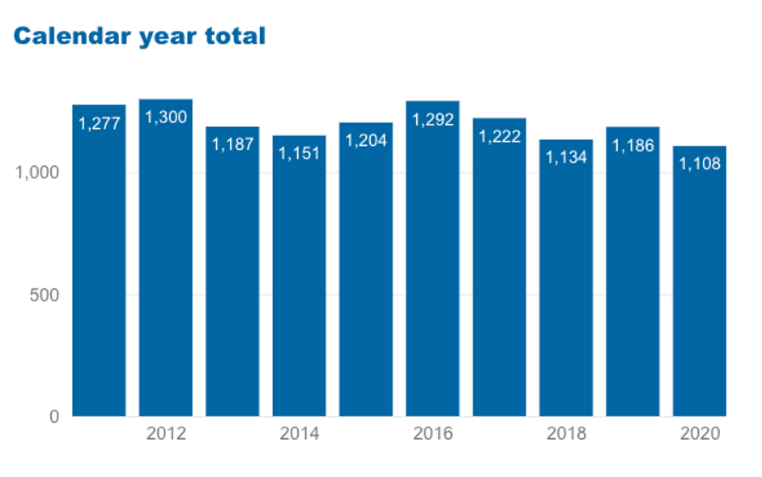
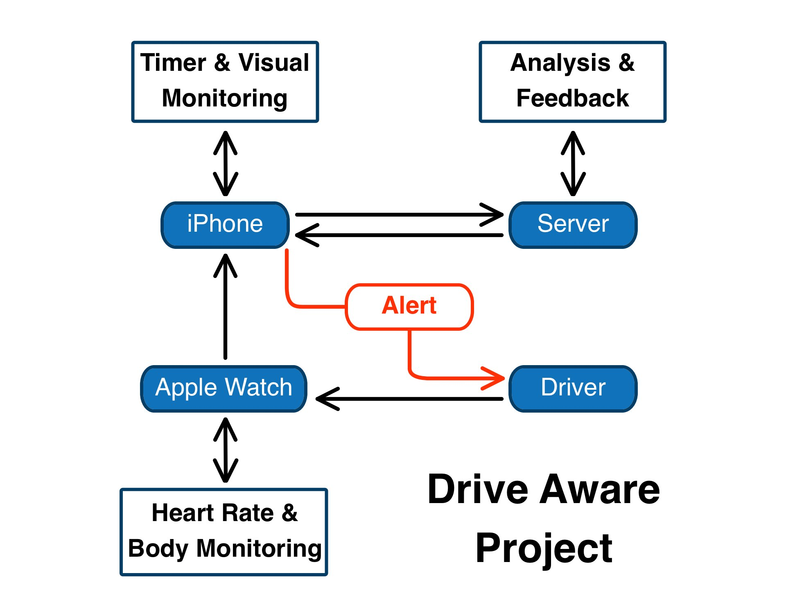

A mobile app based on Artificial Intelligence using an Apple iPhone and Apple Watch aimed at alerting drivers to the early signs of driver fatigue.
Drive Aware is an iOS App supported by a WatchOS App for the Apple iPhone and Apple Watch that will allow motor vehicle drivers to observe and track their biometric vital signs to alert them of the onset of driver fatigue caused by long and sustained periods of driving. Drive Aware will gather and track information using the sensors which are inbuilt into the Apple Watch 6 (and later) as well as the Apple iPhone 11 (and later), the front facing camera of the iPhone will also be utilised to track a driver’s visual cues caused by driver fatigue. AI Technology will be incorporated which will enable Drive Aware to learn baseline biometric vital signs of the driver as well as their visual mannerisms to improve fatigue detection and help eliminate false alerts of driver fatigue.
Similar and Related Technology
Waymo is a fully autonomous technology that is in full control of a motor vehicle (Waymo Driver, 2021). This technology does away with a driver completely and relies on new technology and AI components not previously used in recent years. Waymo is working towards having a fleet of self-driving vehicles that operate in a similar way that an Uber driver works. A user can organise a pickup location and like Uber set their destination. Waymo is also working on the development of self-driving trucks. In our project interview with Daniel Atanasovski, we discovered that they put a lot of effort into driver monitoring as when they are testing their vehicles, they have a person supervising the car and need to ensure that focus is maintained.
Tesla and Cadillac and Other Built in Driver Assistance Systems are arguably the perceived market leaders when it comes to driver assistance systems and self-driving cars1 (Cars with Autopilot in 2021 - AutoPilot Review, 2021). Both technologies always require active driver supervision (Cadillac, 2021) (Tesla, 2021) but unlike Drive Aware technology, these systems focus on the safety features and AI that are inbuilt into the car which enables the car to make certain driving decisions dependent on the situation, for example, avoidance procedures in the event of a vehicle accident as well as emergency braking. While driver assistance packages included in cars may also have the aim of preventing collisions caused by fatigue, the application will be designed to monitor the driver and alert them to signs of fatigue, before the point at which driver assistance technology would normally be implemented.
Seeing Machines has developed technology that can robustly, accurately and in real-time, measure a driver’s visual attention to their environment, assess their degree of drowsiness and ultimately detect if the driver has passed a threshold of risk (SeeingMachines, 2021). Seeing Machines technology is already being used in the transport industry as well as being an OEM solution to various car companies, with their visual based technology built in along with other advanced safety features (Seeing Machines Limited SEE DMS Available in 2021 Cadillac Escalade, 2021). The technology utilises a sensitive visual tracking system, but they do not appear to have incorporated any other sensors to provide tangible evidence of driver fatigue. Drive Aware will fill that gap by providing an all-round solution that encompasses monitoring from multiple sensors and most importantly, Drive Aware is a truly mobile system which the driver can take with them and use in any vehicle.
Related Mobile Applications
BreathalEyes is an App that can assess a user in real time to determine if that person is under the influence of alcohol based off their eye movement (BreathalEyes Inc, 2021). Information about BreathalEyes seems to be outdated and limited. The most recent information found in regard to a valuation and seed funding is from 2014 (BreathalEyes Company Profile: Valuation & Investors | PitchBook, 2021).
Coffewake Place the App in your pocket or on your lap and you will receive a physical vibration to help you stay awake (Coffeewake - keep me awake!, 2021).
Drive Awake and Drowsy Driving Alert use your camera to detect if you seem sleepy by watching your eyes (Drive Awake, 2021) (Drowsy Driving Alert: Sleepy driver warning, 2021).
Discontinued Applications: Awake Drowsiness Detector for Driving. This application requires you to press a reset button every few seconds based on how tired you feel. Stay Awake features a prerecorded voice operator that will ask you to repeat words as a way of keeping you alert (5 Apps That Will Help You Stay Awake on a Long Drive, 2021).
Planned Features:
Apple iPhone:Drive Aware App - Used to analyse the information of which both the iOS and WatchOS collect during use. (Apple Developer Documentation, 2021) Information such as the biometric vital signs data will be stored through the mobile app on a cloud-based service. The mobile app will be used as the go-between software that incorporates the iPhone technology being used for the Drive Aware system, I.e., Accelerometer to measure a vehicles speed.
Medical ID integration - Information already stored on the drivers iPhone will be used to notify emergency services and their emergency contact in the event of an accident or unresponsiveness. (Create and share your Medical ID in Health on iPhone, 2021) During the initial setup of a driver’s profile in the Drive Aware App, the driver will be asked to ensure this information is up to date.
GPS - In the event of a crash, the iPhones GPS can be used to help locate a driver that is unresponsive. (Apple Developer Documentation, 2021-q)
Accelerometer - Used to measure an iPhones speed. (Apple Developer Documentation, 2021-g) Based off the accelerometer readings, the Drive Aware App will send an alert to the driver if their speed becomes erratic. Erratic speed can be a sign on driver fatigue (Top 10 signs of driver fatigue, 2021). The accelerometer can also detect if the vehicle comes to an erupt stop. Contact will then be made to emergency services by the app.
Front Facing Camera - This camera will be used by the Drive Aware App to detect a driver’s visual fatigue cues. Changes in eye movement 2, yawning, rapid or slowed blinking and the inability to remain visually attentive are all visual cues of driver fatigue which the camera will be able to detect. (Apple Developer Documentation, 2021-c)
Stopwatch / Timer - An alert will advise the driver when a predetermined amount of driving time has been reached. (Apple Developer Documentation, 2021-j) This will be a cue for the driver to stop and take a rest. An additional “rest” timer will be used to advise the driver how long they have rested for. The timer will be calibrated with an algorithm that learns the time it usually takes an individual driver to become tired while accounting for the driver’s recent sleep patterns.
AI Technology - AI Technology will be used to first learn and then determine a driver’s visual fatigue cues, based off their eye movement, rate of blinking, yawning and overall alertness. (Machine Learning - Apple Developer, 2021)
Apple Watch:Drive Aware App - Used to send majority of notifications to alert drivers of the fatigue cues. (Apple Developer Documentation, 2021-r)
Heart Rate Monitor - The newly included heart rate sensor will be used to monitor a driver’s heart rate while driving. (Apple Developer Documentation, 2021-k) A higher or lower than normal heart rate can be an early sign of driver fatigue.
GPS - Similarly to the iPhone GPS, the watch GPS can help locate a driver that has become separated from their vehicle or their iPhone. (Use your Apple Watch without your iPhone nearby, 2021)
Accelerometer and Gyroscope - Information will be gathered that determines if a driver’s watch wearing arm is active, I.e., using the steering wheel. Alerts will be sent to the driver if the watch wearing arm has been inactive for too long 5. (Accelerometer and Gyroscope - Interaction - WatchOS - Human Interface Guidelines - Apple Developer, 2021)
Reaction Time Test - To help determine if a driver is capable of holding their attention after a rest period, a driver will be asked to complete a quick “game”. This game will ask the driver to tap on a colour when prompted for a total of three times. Should the driver fail at the game, the rest timer will restart, and the process will begin again 6.
Motivation:
Humans make mistakes and a lot of our mistakes are small and inconsequential but some of our mistakes can have far reaching and devastating effects to not only ourselves but to our loved ones and to those who we don’t even know. Drive fatigue is one such mistake that has the potential to be far reaching and devastating by causing death and injury.
For the purposes of this project, fatigue can be taken to mean a state of reduced physical or mental alertness which impairs performance on a range of cognitive and psychomotor tasks including driving (Vogelpohl, Kühn, Hummel and Vollrath, 2019) and is considered to be the outcome of a self-regulative process of managing personal discomfort and tiredness (Fisher, Rizzo, Caird and Lee, 2011). Considering this, it is worth considering the process of falling asleep which is not sudden, rather a continuous, interwoven series of changes which begins with relaxed drowsiness, succession of intermediate states, part wakefulness and part sleep in varying proportions (Ogilvie, 2001). The problem that this causes when a human is responsible for the control of a motor vehicle is that there is no set point at which a person will know that they are “asleep at the wheel”.
Unfortunately, evidence points to drivers having little awareness of their own level of alertness (Fisher, Rizzo, Caird and Lee, 2011) and a study of thirty young, male drivers found 80 minutes to be the safe upper limit for monotonous highway driving (Ting, Hwang, Doong and Jeng, 2008). Alarmingly, this is 40 minutes less than the suggested break interval of 2 hours made by the Department of Transport and Main Roads. (Driving tired (Department of Transport and Main Roads), 2021)
Deaths per year on Australian Roads
(Power BI Report, 2021) 
(Waymo, 2021)
By developing technology that can track, alert and educate a driver to the early signs of driver fatigue, the DATT hopes to reduce the number of deaths and injuries to drivers and road users.
Description:
Drive Aware is an iOS App with WatchOS App which will gather and track a driver’s biometric vital signs and will alert them of early fatigue indictors caused by continuous periods of driving. The App does this by collecting data from the Apple iPhone App and the WatchOS App in conjunction with sensors that are inbuilt into the Apple iPhone and the Apple Watch. For the project’s initial development, it has been decided to work with the devices above only in the hope that it will simplify its development and introduce other platforms and devices over time.
On initial setup of the Drive Aware App, the driver will need to complete their Profile. Profile setup will ensure the driver has completed all the necessary steps to ensure the Drive Aware App runs effectively. Essential profile information includes completing the drivers details in the Health App which comes preinstalled on iPhones.
Information within the Health App includes, name, date of birth, sex, weight, height, blood type and a list of any medicine the driver is currently on and of which may affect heart rate. Medical ID information setup through the Health App will also include confirming the driver has an emergency contact listed.
The driver will be asked to give permissions to the Drive Aware App for iOS and WatchOS to access data about location settings to enable GPS within the App and ask for permissions in order to use the front facing camera due to the collection of data and recording of the driver while the App is in use. Drive Aware will automatically use the accelerometer, gyroscope and heart rate monitor data from the iPhone and Apple Watch with a notification advising of the permissions granted.
It is assumed that due to the nature of the Apple Watch, a driver’s baseline heart rate has already been recorded through the Heart Rate App, and as access has already been granted to retrieve this data; Drive Aware will automatically use this information and any information available on the user’s usual sleep patterns.
In car setup of your iPhone will be required to calibrate the front facing camera. A driver will be asked to mount their phone onto their vehicle’s dashboard or inner windscreen via a suitable phone mount that does not obstruct the cameras view. The choice of mount will be of the driver’s preference, and it will be highly recommended that the phone is connected to the in-vehicle power supply via cable.
Calibration of the visual monitoring system will take place the first time the Drive Aware App is used. The system will confirm with the driver that the iPhone has been placed in a suitable mount and a reminder will be given to connect their iPhone to a power supply.
Calibration will include the visual testing of the driver by asking them to perform a series of simple tasks. Tasks will include looking at the front facing camera, the driver will be prompted to blink a number of times, move their gaze up and down as well as left and right, and perform a simulation of yawning by opening and closing their mouth. AI Technology will then be able to use this calibrated information to further learn a driver’s visual mannerisms or cues every time they use Drive Aware and then be able to detect if the driver is experiencing driver fatigue.
As the vehicle moves, the accelerometer in the iPhone will monitor the speed of the vehicle. If the speed of the vehicle is determined to be erratic (speed increases or decreases at an irregular pace) an alert will be shown across the iPhones screen, with the driver needing to dismiss the alert to stop any further action by the App. Should the driver fail to dismiss the initial alert, an alarm will be sounded to further get the drivers attention. Failing the dismissal of the second alert, the Drive Aware App will attempt to contact emergency services and the driver’s emergency contact. This action will also be used in the event the accelerometer detects a sudden decrease in speed which could be the result of a crash.
While the Drive Aware App is in use for both the iPhone and Apple Watch, the GPS will be set to always on. In the event of a crash, emergency service personnel will be able to use the GPS coordinates to help locate the driver should they be unresponsive. Having the ability to locate the driver sooner rather than later via GPS could be the difference between life and death.
Along with the accelerometer, a timer will automatically start when vehicle movement is detected through the iPhone. An alert will sound when two hours of continuous driving has been reached and the App will recommend the driver to stop the vehicle to have a rest. Once the vehicle has come to a complete stop the alert will disappear and a “rest” timer will begin a count down from fifteen minutes. The rest timer will not be able to be dismissed until the countdown has been completed. Upon completion of the rest time, a “game” will appear on the iPhones screen to measure the driver’s attention. When prompted, a driver will be asked to tap on a colour within a two second time frame. The driver will be asked a total of three times to tap on the required colour with each time being a different colour. Should the driver fail to tap the correct colour or fail to tap in the required timeframe on any turn, a second fifteen-minute rest timer will start, and the process of the game will be restarted.
Example of game colour palette
(Format, 2021)
The Drive Aware WatchOS App will monitor data from the heart rate sensor which is located on the bottom side of the watch face and pressed against the driver’s skin. As previously mentioned, a driver’s baseline heart rate will have already been collected. At a glance, the driver will be able to see their current heart rate as well as their baseline heart rate. The App will alert the driver should their heart rate either drop below or increase above their normal heart rate for a sustained amount of time. Should the driver be unresponsive and unable to dismiss the alert, emergency service personnel will be advised as well as the emergency contact.
The Apple Watch has a separate accelerometer and gyroscope to the iPhone. These two sensors will be used to measure the specific movements associated with using a steering wheel. Being able to monitor these movements, ensures the driver has their arm and hand in the required position at all times. Should the driver stop or drop their arm from being able to perform the actions associated with the steering wheel, an alert will remind them to reposition their arm into the correct position. The alert will need to be dismissed or failure to do so will result in an audible alarm sound. Again, should the alarm not be turned off and dismissed, emergency service personnel as well as the driver’s emergency contact will be advised of a possible crash event.
AI Technology will enhance the effectiveness of the Drive Aware System in real time. AI Technology will be used to help track and effectively identify the visual cues of driving related fatigue. The technology will be able to tell if a driver is distracted and not paying suitable attention to the road. Visual cues include eye movement or lack thereof, rate of blinking weather that be too fast or too slow, yawning and eye attentiveness. With the ability to continually learn, AI Technology will continue to improve and identify the visual cues at a much faster and accurate rate than previously possible.
All data that is collected and used by Drive Aware will be encrypted and stored using a Software as a Service cloud-based solution. Drive Aware will have a number of data center locations to choose from and should drivers ask, they will be given an option to choose a preferred data site location. Being able to offer this choice helps to build trust in the user base and provides extra assurances of data being managed correctly and ethically by the Drive Aware Tech Team.
Plan. Implement. Deliver.
Moving into the next stage of Drive Aware from theoretical stage to tangible results towards a working prototype. Based off the work completed in Assessment Task Two, the Drive Aware Tech Team believes we can deliver artifacts such as a user interface design that will highlight the features of the Drive Aware App for both iOS and WatchOS.
The target market for the project is primarily the individual user of the application but it is conceivable that motoring organisations, insurers or rental car companies among others may be interested in purchasing in bulk and offering the application to their customers or members. 
Tools & Technology:
The following tools and tech will be required in order to complete the design and implementation of the Drive Aware App.
Apple Developer Technologies:
SwiftUI provides views, controls, and layout structures for declaring your app’s user interface. The framework provides event handlers for delivering taps, gestures, and other types of input to your app, and tools to manage the flow of data from your app’s models down to the views and controls that users will see and interact with (Apple Developer Documentation, 2021-n).
Use Create ML with familiar tools like Swift and macOS playgrounds to create and train custom machine learning models on your Mac. You can train models to perform tasks like recognizing images, extracting meaning from text, or finding relationships between numerical values (Apple Developer Documentation, 2021-n).
Core Motion reports motion- and environment-related data from the onboard hardware of iOS devices, including from the accelerometers and gyroscopes, and from the pedometer, magnetometer, and barometer. You use this framework to access hardware-generated data so that you can use it in your app. For example, a game might use accelerometer and gyroscope data to control onscreen game behaviour (Apple Developer Documentation, 2021-i).
Core Location provides services that determine a device’s geographic location, altitude, and orientation, or its position relative to a nearby iBeacon device. The framework gathers data using all available components on the device, including the Wi-Fi, GPS, Bluetooth, magnetometer, barometer, and cellular hardware (Apple Developer Documentation, 2021-d).
User-facing notifications communicate important information to users of your app, regardless of whether your app is running on the user's device (Apple Developer Documentation, 2021-e).
The PushKit framework supports specialized notifications for updating your WatchOS complications, responding to file provider changes, and receiving incoming Voice-over-IP (VoIP) calls. PushKit notifications differ from the ones you handle with the User Notifications framework. Instead of displaying an alert, badging your app’s icon, or playing a sound, PushKit notifications wake up or launch your app and give it time to respond. Both PushKit and User Notifications use the Apple Push Notification service (APNs) to deliver push notifications to user devices (Apple Developer Documentation, 2021-q).
As the system gathers information using various sensors on a device, SensorKit enables an app to access select raw data, or metrics that the system processes from a sensor (Apple Developer Documentation, 2021-l).
The System Configuration framework provides functions that determine the reachability of target hosts in both a synchronous and an asynchronous manner. It also provides error detection facilities (Apple Developer Documentation, 2021-m).
Use the Watch Connectivity framework to transfer data between your iOS app and the WatchKit extension of a paired WatchOS app (Apple Developer Documentation, 2021-p).
The WatchKit framework provides the infrastructure for creating WatchOS apps, including an extension delegate that manages background tasks, extended runtime sessions, Siri intents, and workout sessions (Apple Developer Documentation, 2021-r).
Use Core ML to integrate machine learning models into your app. Core ML provides a unified representation for all models. Your app uses Core ML APIs and user data to make predictions, and to train or fine-tune models, all on the user’s device (Apple Developer Documentation, 2021-s).
Swift includes modern features like type inference, optionals, and closures, which make the syntax concise yet expressive. Swift ensures your code is fast and efficient, while its memory safety and native error handling make the language safe by design. Writing Swift code is interactive and fun in Swift Playgrounds, playgrounds in Xcode, and REPL (Apple Developer Documentation, 2021-f).
Xcode consists of a suite of tools that developers use to build apps for Apple platforms. Use Xcode to manage your entire development workflow—from creating your app to testing, optimizing, and submitting it to the App Store (Apple Developer Documentation, 2021-n).
HealthKit provides a central repository for health and fitness data on iPhone and Apple Watch. With the user’s permission, apps communicate with the HealthKit store to access and share this data (Apple Developer Documentation, 2021-u).
The App Store Connect API is a REST API that enables the automation of actions you take in App Store Connect (Apple Developer Documentation, 2021-k).
The App Store is a safe and trusted place for customers to discover apps, and a great opportunity for developers to deliver apps and services across iPhone, iPad, Mac, Apple TV, and Apple Watch in 175 regions (App Store - Apple Developer, 2021-b).
TestFlight makes it easy to invite users to test your apps and app clip experiences and collect valuable feedback before releasing your apps on the App Store. You can invite up to 10,000 testers using just their email address or by sharing a public link (TestFlight - Apple Developer, 2021).
AVCam allows the App to capture photos with depth data and record video using the front and rear iPhone cameras. (Apple Developer Documentation, 2021-b)
Skills:
The skills required would come from someone with a background as a Software Developer, and more
specifically an iOS Software Developer.
Their skill set would include.
(How to become a Developer - Salary, Qualifications, skills & Reviews – SEEK, 2021), (Senior iOS Developer, 2021), (iOS Developer, 2021)
Due to the nature of the assignment, coupled with our teams limited skill set of a Software Developer. We as a team will be attempting to bring the Drive Aware App as close to our goal of tangible results towards a working prototype.
Our aim is to use our current skill sets and online tools (Udemy Tech Tutorials) in upskilling ourselves to give us the ability to deliver artifacts such as a user interface design that will highlight the features of the Drive Aware App for both iOS and WatchOS.
We believe the most useful skill we can acquire is to gain experience in learning how to use the Xcode platform as well as learning the programming code Swift.
Future Tools & Technology:
EEG - The measurements of an electroencephalogram (EEG) has been used to identify synchronisation of specific bands of signals from different cortical areas during the onset and development of fatigue with associated blood biochemistry markers - an increase in blood glucose and serum creatinine levels. (Kar, Routray and Nayak, 2011) In other words, defined patterns in the electrical activity of the brain which change as it moves towards a state of sleep. As things stand, measurement of brain waves while driving is beyond the scope of this project but there have been considerable developments in the portability of the technology involved, for example the development of a headband EEG. (Berger, 2021) We believe that as this technology evolves and portability issues improve, an EEG headband could be used in conjunction with the Drive Aware App. Although this would require the App user to purchase additional hardware, it would likely improve the efficacy of the service and there are manufactures of such headsets that are currently looking for developers to create applications for their products.(BrainBit, 2021) ( SenzeBand: The Brainwave Sensor for Everyone | Neeuro, 2021). However, we still believe that the maintenance of the initial version of using an iPhone and Apple Watch should be maintained to maximise the potential market for its use.
Thermal Imaging - Research completed by (Kiashari et al., 2020) provides evidence that their new non-intrusive driver drowsiness detection method can detect drowsiness by reviewing a driver’s respiration analysis via facial thermal imaging. Their results have shown they can accurately detect drowsiness levels to an accuracy of 90%, sensitivity of 92%, specificity of 85%, and precision of 91%. (Kiashari et al., 2020) By incorporating a thermal imaging framework into the Drive Aware App, it could potentially provide an additional information stream to alert the driver of the signs of fatigue.
Audio and Visual System Integration - Following our interview with Daniel Atanasovski,(Josevski, 2021) he question around integrating Drive Aware with the on-board navigation system of a vehicle came up. That question led to the thinking on the ability of integrating the Drive Aware App with the audio and visual system of a vehicle by allowing the interface of the App to be shown on the in-built digital screen. By enabling this integration as part of the Drive Aware App, it would mean the driver’s attention would be more focussed on the act of driving and any notifications that would have previously come through the iPhone would now be centrally located with all other alerts that the vehicle would use through the audio and visual system.
Road Safety Innovation Fund (Australia) - The Road Safety Innovation Fund (Office of Road Safety) targets innovative projects designed to reduce the number of deaths and serious injuries on Australian roads. (Australian Government Office of Road Safety, 2021) The program itself is run by the Australian Government and provides funding to suitable projects that contribute to a safe and sustainable road transport system toward Vision Zero - zero fatal and serious injuries on our road by 2050. (Programs, 2021). It is hoped by applying and gaining funding, the Drive Aware App will be able to be developed to it’s full potential and include not only the outlined Future Tools and Technology but other innovations that are identified through it’s life cycle.
Conclusion
A single life being saved because of the development of this application would make it worthwhile. While other technologies exist that serve the purpose that Drive Aware aims to fulfil, there are significant differences in the way in which they function and limits on their portability between vehicles meaning that this service would provide a useful alternative or could be useful to supplement them. Furthermore, the uptake of these technologies indicates that there may well be appetite in the market for similar products, be that from individuals or organisations wishing to promote safe driving such as insurers or rental car companies. There is further merit in the Drive Aware App as a cost-effective solution to other available technologies that are typically priced out of the reach of the average user, I.e., middle class families, young drivers, and students. While most people today have access to a smart phone and the uptake in wearable technology is steadily growing, which again makes the Drive Aware App more feasible to a wider market.
While initial development of the application would require little in the way of equipment, it is recognised that completing this process is beyond the current skill set of our group. However, we will endeavour to take this project from its theoretical stage to as close as possible to a working prototype.